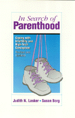

Gripping personal and professional accounts of methods of conception for everyone coping with infertility
Gripping personal and professional accounts of methods of conception for everyone coping with infertility


 Gripping personal and professional accounts of methods of conception for everyone coping with infertility
Gripping personal and professional accounts of methods of conception for everyone coping with infertility

|  |
In Search of ParenthoodCoping with Infertility and High-Tech ConceptionJudith N. Lasker and Susan Borgpaper EAN: 978-1-56639-259-4 (ISBN: 1-56639-259-4) |
"Anyone considering a new method of conception or struggling to resolve infertility should read this book. The authors point to the need for more public discussion of infertility and more social support groups for the infertile. Reading and discussing this book is a first step. It is also an excellent supplementary text for courses in human sexuality, sex and gender roles, women and society, or medical ethics, and is guaranteed to provoke lively class discussion."
—Contemporary Sociology
This revised and updated edition provides an accessible discussion of how new reproductive technologies work and how well they work. Includes gripping personal and professional accounts from infertility specialists and would-be parents who have used in vitro fertilization, donor insemination, surrogacy, and other technologies. Would-be parents speak candidly about the difficult process—repeated office visits, frequent tests, and anxious waiting for results—and the staggering costs—in dollars, stress, and physical consequences.
"This book will be useful for several audiences. Infertile women and men considering the new reproductive technologies will find this book an invaluable resource. Health professionals working with infertility patients will find that the book offers helpful insights into the experiences and concerns of their clients. Finally, researchers studying infertility will find this book to be a rich source of interesting hypotheses."
—Contemporary Psychology
"Lasker and Borg present a thoughtful and sensitive examination of the world of the new reproductive technologies. Most importantly, they offer us the voices of the women and men who have been there: in infertility clinics, in in vitro programs, in so-called 'surrogacy' contracts. They share with us the success and failure, joy and grief of our brave new world of reproduction."
—Barbara Katz Rothman, author of The Tentative Pregnancy: Prenatal Diagnosis and the Future of Motherhood
Preface to New Edition
Acknowledgments
Introduction
Part I: The Trauma of Infertility
1. The Drive to Have Children
Personal and Social Pressures •
Why Not Adopt? •
The Pressure to Keep Trying
2. Feelings of Grief
The Grief Process •
Grief with Secondary Infertility and Pregnancy Loss •
Resolution
Part II: The Methods
3. Artificial Insemination
AIH and AID: Responses to Infertility •
The Donor •
An Experience of Donor Insemination •
Keeping AID Secret •
Single heterosexual and Lesbian Women
4. In VitroFertilization
Success Rates •
An Experience of IVF •
The Risks of IVF
5. Surrogacy
An Experience with Surrogacy •
Screening Couples and Surrogate Mothers •
The Relationship Between Surrogate Mother and Couple •
Problems with Surrogacy
6. The Rise and Fall of Ovum Transfer: A Cautionary Tale
Ovum Transfer as an Infertility Treatment •
The Commercialization of Ovum Transfer •
The Fall of OT •
Ovum Transfer for Prenatal Diagnosis
Part III: Significant Others
7. Donors and Surrogate Mothers •
Who Becomes a Donor or Surrogate Mother? •
The Ideal Donor, the Ideal Surrogate Mother •
Finding One's Own Donor •
Risks for Egg Donors and Surrogate Mothers •
Risks for Sperm Donors •
Donors and Recipients
8. The Professionals
Professionals and Their Motives •
The Power of Professionals •
Meeting the Needs of Clients •
Stresses on Professionals
Part IV: Effects on the Family
9. The Couple
Stresses on the Couple •
Men and Women: Different Responses •
Inequalities •
Effects of Stress
10. High-Tech Children
Special Problems for the Children •
The Search •
The Child's Relationship to the Donor or Surrogate Mother •
Telling the Child •
Single Heterosexual and Gay Parents •
The Family
11. Reactions of Others
Responses of Friends and Family •
Public Responses •
Reasons for Disapproval •
Groups in Opposition •
Coping with Disapproval
Conclusion
Scenarios for the Future •
What Should Be Done?
Notes
Index
 | Judith N. Lasker is a Professor I the Department of Sociology and Anthropology, Lehigh University. |
Susan Borg is Director of the Department of Urban Planning and Development, West Orange, New Jersey. Together they have also authored When Pregnancy Fails: Families Coping with Miscarriage, Ectopic Pregnancy, Stillbirth and Infant Death.
General Interest
Health and Health Policy
© 2015 Temple University. All Rights Reserved. This page: http://www.temple.edu/tempress/titles/920_reg.html.